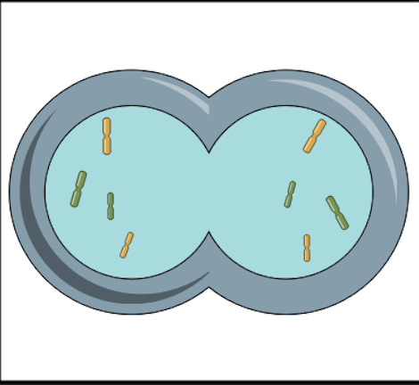

<Telofaza

Despre Telofaza:
În telofază, cromatidele separate ajung la polii opuși ai celulei și se dezcondensează înapoi în cromatină, devenind mai puțin vizibile sub microscop.
Membrana nucleară începe să se reformeze în jurul fiecărui set de cromozomi.
Nucleolii reapar în fiecare nucleu, și astfel se formează două nuclee distincte în celulele fiice.